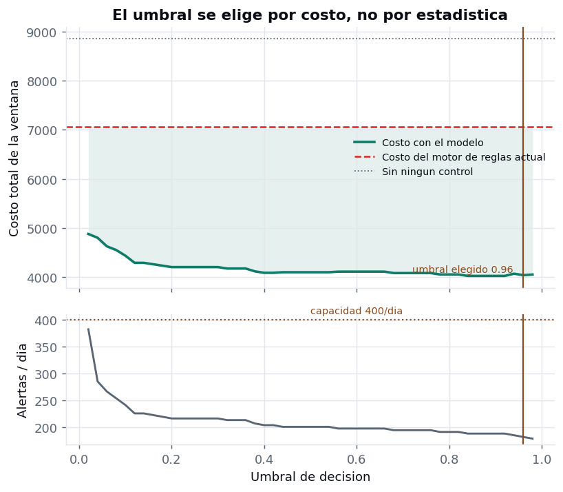

El problema
Las entidades financieras pierden dinero por fraude con tarjeta de credito, y la perdida no se puede evitar simplemente siendo mas estricto. Cada vez que llega una operacion hay que decidir en el momento si se aprueba o si se detiene para revisarla, y las dos decisiones cuestan. Detener una compra legitima molesta a un cliente que no hizo nada y consume tiempo de un analista. Dejar pasar un fraude significa perder el monto completo y pagar despues el contracargo.
El desafio es que el fraude es rarisimo. En el conjunto de datos de este proyecto hay 492 operaciones fraudulentas sobre 284.807, es decir una cada 579. Un sistema que apruebe todo acierta el 99,83 % de las veces y sin embargo no sirve para nada.
Como se resuelve hoy
Antes de tener modelos estadisticos, y todavia hoy en muchas operaciones, la deteccion se apoya en un motor de reglas escritas por analistas de riesgo. Son condiciones explicitas del tipo detener la operacion si el monto pasa de cierto valor, si llega en un horario inusual o si combina varias caracteristicas sospechosas. El motor se calibra revisando el historico de contracargos y tiene la ventaja de que cualquiera puede leer por que se detuvo una compra.
Su limite es la cantidad de condiciones que una persona puede escribir y mantener. Un motor de reglas captura los patrones evidentes, pero no combina veinte variables a la vez ni ajusta sus umbrales segun cuanto dinero esta en juego en cada operacion.
Que se construyo
Un modelo que estima la probabilidad de fraude de cada operacion y decide alertar comparando lo que cuesta equivocarse en cada direccion. El punto de corte no se elige por criterios estadisticos sino economicos, buscando el menor costo total para la entidad y respetando la capacidad real de revision del equipo.
Todo lo que sigue compara ese modelo contra el motor de reglas descrito arriba, medido sobre las mismas 56.962 operaciones que ninguno de los dos vio durante su calibracion. La comparacion no es contra la ausencia de control, porque ninguna entidad opera sin control. Sobre esas operaciones el modelo evita 54 % de la perdida evitable frente al 20 % del motor de reglas, una diferencia de 34 puntos.
Cuanto cuesta cada tipo de error
Para poder comparar dos sistemas de deteccion hay que poder decir cuanto cuesta cada decision. Cada vez que el sistema evalua una operacion se da una de cuatro situaciones, y cada una tiene una consecuencia economica distinta.
Se detecta un fraude real
La operacion se detiene y se investiga. Se paga el costo de la revision y se recupera buena parte del dinero, aunque nunca todo, porque una fraccion ya se fue.
Se aprueba una compra legitima
El caso normal. No cuesta nada y es lo que ocurre en la enorme mayoria de las operaciones.
Pasa un fraude sin detectar
Se pierde el monto completo de la operacion y ademas el cargo fijo que cobra la red por procesar el contracargo. Es el error mas caro.
Se detiene una compra legitima
Se paga la revision y se suma un costo mas difuso, el de haber bloqueado a un cliente que no hizo nada. Llamado, reposicion de tarjeta y riesgo de que se lleve su consumo a otra entidad.
Poner numero a esas cuatro situaciones exige cuatro parametros que el negocio conoce y que no salen de los datos. Todas las cifras de este informe dependen de ellos, asi que conviene revisarlos antes de leer cualquier resultado.
| Parametro | Valor | Que representa | De donde deberia salir |
|---|---|---|---|
| Costo de revisar una alerta | 4 | El tiempo de analista que consume investigar una operacion detenida | Costo laboral por caso, medible con datos internos |
| Costo de bloquear a un cliente legitimo | 25 | La molestia al cliente cuando se detiene una compra valida | El mas incierto de los cuatro. Requiere una decision del area comercial |
| Fraccion del monto que se recupera | 0,85 | Cuanto dinero se rescata cuando el fraude se detecta a tiempo | Historico de recuperos de la entidad |
| Cargo por contracargo | 15 | Lo que cuesta procesar la disputa de una operacion fraudulenta | Tarifario de la red, es un dato cerrado |
Las cifras monetarias del informe estan en la unidad del conjunto de datos, que su publicador no documento. Lo que se puede trasladar a otra operacion son las proporciones, no los montos absolutos.
El resultado
Medido una sola vez sobre las ultimas 7,7 horas del periodo, 56.962 operaciones con 75 fraudes. Los dos sistemas se calibraron con los mismos datos previos y ninguno vio este tramo.
| Indicador | Modelo | Motor de reglas |
|---|---|---|
| Perdida evitable que se evita | 54 % | 20 % |
| Monto fraudulento interceptado | 65 % | 50 % |
| Fraudes detectados de cada 100 | 73 | 71 |
| Alertas correctas de cada 100 | 95 | 43 |
| Alertas por dia | 182 | 389 |
La diferencia de precision es la que mas se siente en la operacion diaria. De cada 100 alertas que levanta el modelo, 95 corresponden a fraude real; en el motor de reglas son 43. Un analista que revisa la cola del modelo encuentra fraude la mayoria de las veces, y esa es la diferencia entre un sistema que el equipo usa y uno que aprende a ignorar.
A donde va el dinero
Costo de operar el modelo durante la ventana de prueba, 7,7 horas y 56.962 operaciones.
El costo total no es una sola cosa. Se reparte entre el fraude que se escapa, la parte del fraude detectado que ya no se alcanza a recuperar, y lo que cuesta operar la cola de revision con sus errores. Verlo desagregado muestra donde conviene trabajar.
| Concepto | Monto | De donde sale |
|---|---|---|
| Fraude no detectado | 2.979 | 20 operaciones que pasaron completas, mas su contracargo |
| Fraude detectado y no recuperado | 758 | La fraccion del monto que no se rescata aun detectando a tiempo |
| Revision de alertas | 232 | 58 alertas investigadas |
| Bloqueos a clientes legitimos | 75 | 3 compras validas detenidas |
| Costo total con el modelo | 4.044 |
Casi todo el costo remanente esta en la primera fila. Operar la cola de revision, entre investigar alertas y compensar bloqueos equivocados, representa una fraccion menor del total. El margen de mejora esta en detectar mas fraude, no en abaratar la operacion.
Cuanto se ahorra y frente a que
Hay tres escenarios posibles y conviene no confundirlos. Aprobar todo sin ningun control es el techo teorico de la perdida, no una alternativa que alguien opere. El motor de reglas es lo que la entidad gasta hoy. El modelo es la propuesta.
| Escenario | Costo | Que representa |
|---|---|---|
| Aprobar todo sin control | 8.854 | Exposicion total al fraude de la ventana. Techo de lo que se puede evitar |
| Motor de reglas | 7.065 | El costo que la entidad tiene hoy |
| Modelo | 4.044 | La propuesta |
| Ahorro frente al costo actual | 3.022 | 43 % menos de lo que hoy cuesta el fraude |
La ultima fila es el caso de negocio. Reemplazar el motor de reglas por el modelo reduce en 43 % lo que la entidad gasta hoy por fraude, contando tanto el dinero perdido como el costo de operar la revision. Visto sobre la exposicion total, el modelo evita 54 % de la perdida y el motor de reglas 20 %, una diferencia de 34 puntos.
Que tan estable es el resultado
La medicion anterior corresponde a un unico tramo del periodo. Este ejercicio repite la evaluacion a lo largo de toda la ventana para ver si el resultado se sostiene.
El procedimiento imita lo que haria la operacion real. Se recorre la linea de tiempo hacia adelante y en cada paso el modelo se reentrena con toda la historia disponible hasta ese momento, se recalibra el punto de corte con el tramo mas reciente, y se decide sobre el periodo siguiente sin volver a mirarlo. Nada de lo que ocurre en un periodo se usa para decidir en ese mismo periodo.
| Periodo | Fraudes | Corte | Modelo | Reglas |
|---|---|---|---|---|
| 1 | 74 | 0,98 | 54,6 % | −15,9 % |
| 2 | 30 | 0,26 | 16,9 % | −232,6 % |
| 3 | 29 | 0,98 | 51,0 % | −29,3 % |
| 4 | 29 | 0,94 | 79,2 % | −37,8 % |
| 5 | 49 | 0,98 | 41,5 % | 24,5 % |
| 6 | 21 | 0,72 | 52,2 % | 25,0 % |
La dispersion importa
El promedio es 49,2 %, pero los periodos van de 16,9 % a 79,2 %. Un sistema que rinde parejo y otro que alterna entre esos dos extremos no son el mismo producto, aunque su promedio coincida.
Antes de comprometer una cifra conviene decidir si se promete el promedio o el piso.
El punto de corte se mueve
La recalibracion lo lleva entre 0,26 y 0,98 segun el periodo. Recalibrar de forma periodica no es un refinamiento opcional, es parte de la operacion.
Que se le puede exigir al modelo
La capacidad del equipo de revision y la precision minima que este dispuesto a tolerar no las decide el area de datos. Vienen dadas, y cada una tiene un precio.
El punto de operacion elegido genera 182 alertas por dia. Si el equipo puede revisar menos, hay que subir el corte y se pierde deteccion. Si se le exige que casi todas las alertas sean fraude real, tambien. Las dos tablas cuantifican ese intercambio, tomando como referencia el mejor resultado sin restricciones.
| Alertas/dia | Correctas de 100 | Fraudes | Monto | Del optimo |
|---|---|---|---|---|
| 25 | 100 | 11 % | 6 % | 11 % |
| 50 | 100 | 21 % | 17 % | 27 % |
| 100 | 100 | 43 % | 42 % | 65 % |
| 150 | 98 | 63 % | 49 % | 77 % |
| 200 | 89 | 76 % | 66 % | 99 % |
| 400 | 48 | 81 % | 77 % | 79 % |
| 800 | 24 | 83 % | 77 % | 3 % |
| Correctas de 100 | Fraudes | Alertas/dia | Del optimo |
|---|---|---|---|
| 50 | 73 % | 182 | 100 % |
| 75 | 73 % | 182 | 100 % |
| 90 | 73 % | 182 | 100 % |
| 95 | 59 % | 138 | 76 % |
| 99 | 59 % | 138 | 76 % |
La recomendacion
Que conviene hacer
Reemplazar el motor de reglas por el modelo, alertando cuando la probabilidad estimada supera 0,96. Sobre la ventana evaluada eso reduce en 43 % lo que hoy cuesta el fraude y ademas baja las alertas diarias de 389 a 182, con lo cual libera tiempo del equipo de revision.
El motor de reglas conviene conservarlo en paralelo durante la transicion, porque su ventaja es que cualquiera puede explicar por que detuvo una operacion.
Con que salvedades
La evidencia cubre dos dias. El backtest muestra periodos de 17 % y de 79 %, asi que la cifra que se comprometa deberia ser conservadora y revisarse con datos de varios meses.
El punto de corte requiere recalibracion periodica, y los cuatro supuestos de costo deberian confirmarse con datos internos de la entidad antes de fijar objetivos.
Para ir mas alla de 77 % del monto fraudulento hace falta informacion que este conjunto de datos no tiene, en particular el identificador de tarjeta que permite construir el historial de comportamiento de cada cliente. Ese es el proximo paso con mayor impacto esperado, y es un pedido de datos antes que un problema de modelado.
Lo que este ejercicio no resuelve
No explica sus decisiones
Las variables del conjunto de datos estan anonimizadas mediante una transformacion que las vuelve ilegibles. El modelo ordena bien las operaciones pero no puede decirle a un analista por que marco una en particular, y sin esa explicacion una cola de revision es dificil de operar.
No conoce al cliente
No hay identificador de tarjeta ni de comercio, asi que no se puede saber cuantas compras hizo esa tarjeta en la ultima hora ni si el monto se aparta de su costumbre. Son las senales mas usadas en los sistemas reales y son justamente las que reconocerian a los 13 fraudes que el modelo hoy no ve.
Los montos no se anualizan
Las cifras corresponden a unas horas de operacion de un emisor europeo en 2013, en una unidad monetaria que el publicador no documento. Multiplicarlas por 365 supondria que el volumen, la composicion del fraude y la moneda se mantienen. Las proporciones se pueden trasladar, los montos absolutos no.
La muestra es corta
Quedan 75 fraudes en el tramo de prueba, de modo que un solo caso mueve el resultado mas de un punto. Cualquier diferencia pequena entre dos alternativas cae dentro del ruido de la medicion.
Como se construyo
Lo que sigue documenta el metodo para quien quiera auditarlo. El informe ejecutivo termina en la seccion anterior.
El orden de los pasos
El tramo de prueba se aparta al principio y se mide una sola vez, al final. Ese orden es lo que sostiene la validez del resultado.
Como se elige que optimiza el modelo
Cinco alternativas, cada una entrenada con una definicion distinta de que error es mas grave. Se comparan por el dinero que ahorran, no por su exactitud.
Un modelo aprende minimizando una penalidad, y esa penalidad se puede escribir de varias formas. La mas simple castiga igual todos los errores. Otra castiga mas el fraude no detectado que la falsa alarma, para compensar que el fraude es rarisimo. Una tercera castiga cada error en proporcion al dinero que estaba en juego en esa operacion. Cada alternativa produce un modelo distinto y la pregunta es cual deja mas dinero en la entidad.
Para responderla se recorre la historia hacia adelante en varios tramos. En cada uno se entrena con el pasado, se fija el punto de corte con el tramo mas reciente de ese pasado, y se mide el ahorro sobre el tramo siguiente. El promedio de esos tramos es la columna principal de la tabla.
| Penalidad | Ahorro | Desv. | Monto | Alertas/dia |
|---|---|---|---|---|
| Pesos por clase | 57,1 % | 7,8 | 72,4 % | 216 |
| Pesos por monto, reequilibrados | 55,6 % | 7,4 | 70,6 % | 214 |
| Sin ponderar | 54,9 % | 9,8 | 68,9 % | 180 |
| Pesos por monto | 45,3 % | 9,6 | 58,3 % | 195 |
| Referencia lineal | 38,2 % | 6,2 | 69,1 % | 456 |
Como se lee
La ganadora aventaja a la segunda por 1,4 puntos, con desviaciones de alrededor de 8. La diferencia es menor que la variabilidad entre tramos, asi que las dos primeras son equivalentes con esta cantidad de datos y elegir entre ellas es cuestion de simplicidad.
Pesar cada error por el monto en juego parece la idea correcta, y lo es, pero solo funciona si ademas se compensa la rareza del fraude. Sin esa correccion pierde 10,3 puntos, porque con un fraude cada 579 operaciones la escasez pesa mas que el monto.
La referencia lineal muestra por que hace falta mirar mas de una columna. Intercepta 69 % del monto, casi tanto como la ganadora, y sin embargo ahorra bastante menos. La razon esta en sus 456 alertas diarias, que se pagan en revision y en clientes molestados.
Como se fija el punto de corte
El modelo no responde si una operacion es fraude. Entrega una probabilidad, y hace falta decidir a partir de que valor conviene alertar.
Para cada operacion el modelo devuelve un numero entre 0 y 1 que expresa cuan sospechosa la considera. Convertir ese numero en una decision requiere fijar un limite. Se suele usar 0,5 por costumbre, y ese valor no tiene ningun fundamento. Solo seria correcto si equivocarse en una direccion costara exactamente lo mismo que equivocarse en la otra, y en fraude no es asi.
El limite correcto sale de comparar costos. Para cada valor posible se calcula que pasaria con todas las operaciones del tramo de calibracion, cuanto fraude se detendria, cuantos clientes legitimos quedarian bloqueados, y cuanto costaria el total. El limite elegido es el que minimiza ese costo respetando la capacidad de revision, y en este caso resulta 0,96.
La referencia para juzgar ese costo es lo que gasta hoy el motor de reglas. Cualquier umbral por debajo de esa linea mejora la situacion actual, y el elegido es el que la mejora mas.

Por que queda tan alto
El modelo reparte sus probabilidades de forma muy polarizada. A la mayoria de los fraudes les asigna un valor cercano a 1 y a un grupo pequeno les asigna practicamente 0, con muy pocos casos en el medio.
La consecuencia practica es que bajar el limite casi no agrega fraudes detectados, porque no hay casos esperando justo debajo, y en cambio multiplica los bloqueos a clientes legitimos. Alertar mas seria mas caro sin ser mas efectivo.
Cuanto depende el resultado de los supuestos
Dos de los cuatro parametros de costo son estimaciones, no mediciones. Si la recomendacion cambiara al mover esos numeros, no seria una recomendacion.
El mas discutible es el costo de bloquear a un cliente legitimo, porque no existe una fuente publica que lo cuantifique. Le sigue el costo de revisar una alerta, que depende de como este organizado el equipo. La prueba consiste en recalcular el punto de corte optimo variando esos supuestos y observar si la decision se mantiene.
Variando uno solo
Llevando el costo de bloquear un cliente de 0 a 100, el punto de corte se queda en 0,96 en practicamente todo el rango. Variando el costo de revision de 0 a 8, no se mueve nada.
Variando los dos
Como los dos no pueden ser irrelevantes al mismo tiempo, se recorre la combinacion completa. El punto de corte solo baja en las 1 combinaciones donde uno de los dos costos es exactamente cero y el otro es minimo, y aun ahi el resultado mejora en dos fraudes.
Que significa
La decision se sostiene en todo el rango de supuestos que describe una operacion real, y solo cambiaria si revisar alertas y molestar clientes fueran ambos gratuitos. La recomendacion no depende de los numeros mas debiles del analisis.
El corolario tambien es util. Discutir estos parametros con el negocio no va a cambiar el resultado, porque lo que falta son predictores.